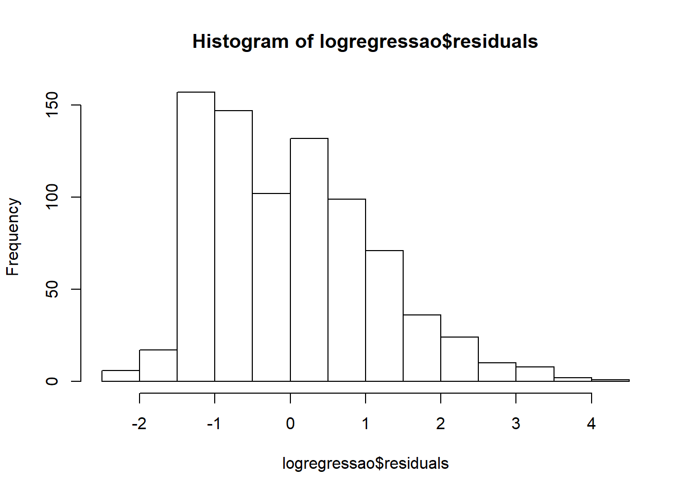

3.2 Lesson 2
Length of stay is an important indicator used in health care assessment. The UCIP_PRISM.sav database contains the record of 812 pediatric admissions in 3 intensive care units (Variable P1: Coimbra, Lisboa and Porto). We want to compare the hospitalization time (Variable tempoint) of the three units. However, we must take into account that the units may receive patients with different levels of severity. The PRISM variable is an indicator of the patient’s severity at the date of admission.
## re-encoding from UTF-8## Length Class Mode
## P1 812 factor numeric
## PRISM 812 -none- numeric
## tempoint 812 -none- numeric- Make a histogram of the length of stay
2.Make a linear regression model with the dependent variable length of stay (tempoint), and the intensive care unit (P1) and PRISM variables as independent variables.
##
## Call:
## lm(formula = tempoint ~ P1 + PRISM, data = aula2)
##
## Residuals:
## Min 1Q Median 3Q Max
## -14.987 -6.568 -3.944 -0.047 255.598
##
## Coefficients:
## Estimate Std. Error t value Pr(>|t|)
## (Intercept) 3.84611 1.36895 2.810 0.00508 **
## P1Lisboa 4.27584 1.54619 2.765 0.00581 **
## P1Porto 2.70428 1.54758 1.747 0.08094 .
## PRISM 0.18291 0.07643 2.393 0.01693 *
## ---
## Signif. codes: 0 '***' 0.001 '**' 0.01 '*' 0.05 '.' 0.1 ' ' 1
##
## Residual standard error: 18.04 on 808 degrees of freedom
## Multiple R-squared: 0.01558, Adjusted R-squared: 0.01192
## F-statistic: 4.261 on 3 and 808 DF, p-value: 0.0053533.Check that the model assumptions in question b) are not satisfied.

or you can plot everything

4.Transform the length of stay variable into the Neperian logarithm of length of stay (tempoint -> logtempoint).
5.Analyze the differences in the logarithm of length of stay between the 3 units, adjusting to the severity of the patients, ie, remake the model in question b) but with the logarithm of length of stay as dependent variable.
##
## Call:
## lm(formula = logtempoint ~ P1 + PRISM, data = aula2)
##
## Residuals:
## Min 1Q Median 3Q Max
## -2.4230 -0.9225 -0.1198 0.7848 4.2611
##
## Coefficients:
## Estimate Std. Error t value Pr(>|t|)
## (Intercept) 0.734535 0.085985 8.543 < 2e-16 ***
## P1Lisboa 0.396173 0.097117 4.079 4.96e-05 ***
## P1Porto 0.319145 0.097205 3.283 0.00107 **
## PRISM 0.026849 0.004801 5.593 3.06e-08 ***
## ---
## Signif. codes: 0 '***' 0.001 '**' 0.01 '*' 0.05 '.' 0.1 ' ' 1
##
## Residual standard error: 1.133 on 808 degrees of freedom
## Multiple R-squared: 0.05785, Adjusted R-squared: 0.05435
## F-statistic: 16.54 on 3 and 808 DF, p-value: 1.954e-10Geometric mean ratio (percentage value)
## (Intercept) P1Lisboa P1Porto PRISM
## 108.451271 48.612650 37.595032 2.7212766.Check that the model assumptions in question e) are satisfied.

or you can plot everything